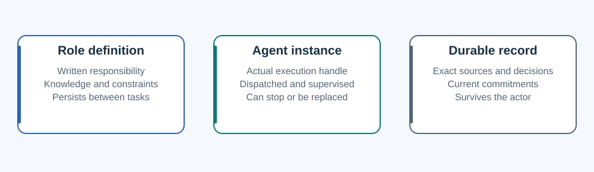

A role is not an agent.
Written responsibilities, live execution and durable evidence do different jobs.

| Moving part | What it means | What it does not mean |
|---|---|---|
| Role definition | Responsibility, selected knowledge, references, authority and route constraints. | A running actor, model ID or permission grant. |
| Agent instance | Actual dispatched work with a handle and dated observations; supervised through evaluation. | A name in a file or a stored activity sentence. |
| Canonical record | Request bundle with exact source links, replayable history, obligations, gates and evidence. | An automatic wakeup, a true human identity, or proof supplied evidence is correct. |
Seven states retain their meaning
| Location | States | Meaning |
|---|---|---|
| Pending | inbox, queued | Captured work, then a substantive plan with owner, acceptance and human gate. |
| Working | active, review, blocked | Actual execution binding, submitted evidence awaiting evaluation, or a named unmet condition. |
| Archive | done, canceled | Accepted scope with its gates satisfied, or an explicit non-success ending. |
Submission is not acceptance. Rework, steering and reopening use legal transitions and preserve the original plan and history. Adding new work to an accepted outcome cannot leave it silently done.
A worker permitted to assign descendants must first load the operational staffing guide and selected role guards. Capability, effort, verification and honest settings evidence apply at that depth too; permission to delegate is not permission to skip discovery or independent review.
Two generic foundations
Director owns conversation, coordination and acceptance. Worker executes a bounded assignment and returns artifacts, checks and unresolved gates. Domain instructions compose with that foundation; a specialist is not a new assignment-role value.